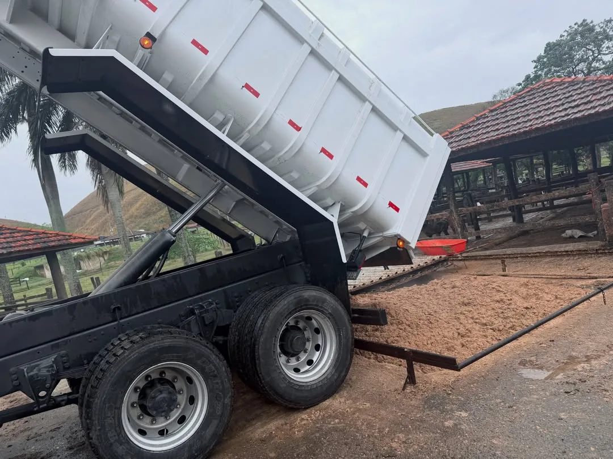
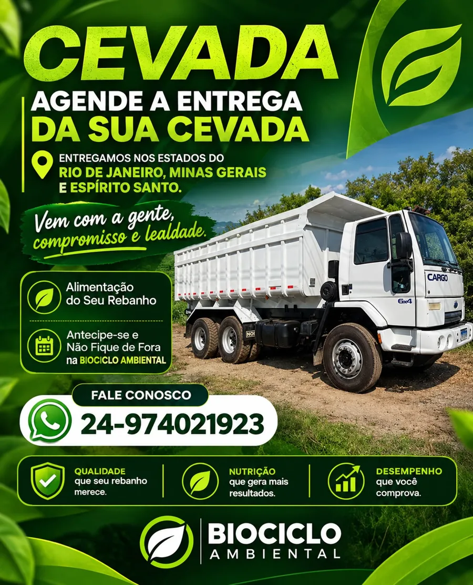
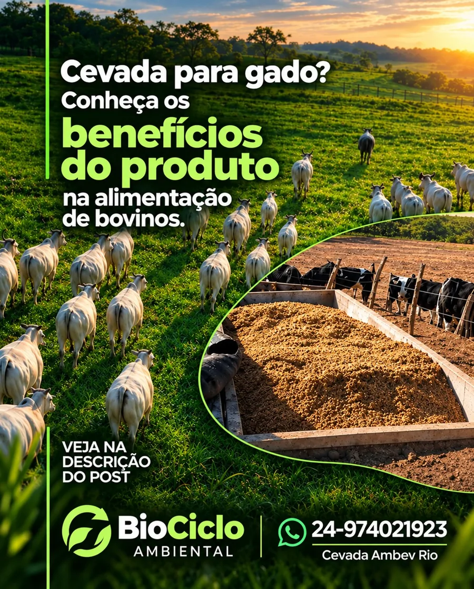

Bagaço de cevada para alimentar seu rebanho.
Uma alternativa de coproduto da indústria cervejeira para compor a alimentação de bovinos. Consulte disponibilidade, condições e entrega para sua propriedade.

Cevada para bovinos, com logística e atendimento próximos.
Atendemos produtores de gado leiteiro e de corte. Nossa equipe ajuda você a consultar disponibilidade e organizar a entrega do bagaço de cevada.
Bagaço de cevada proveniente do processo de fabricação de cerveja, destinado ao uso na alimentação animal conforme orientação técnica.
Organizamos o atendimento e a logística para propriedades no Rio de Janeiro, Minas Gerais e Espírito Santo.
Atendimento a produtores de gado leiteiro e de corte. A inclusão na dieta deve ser ajustada por médico-veterinário ou zootecnista.
Nossa cevada, nossa operação.
Vídeos reais enviados pela BioCiclo. Toque para reproduzir.
Conteúdo real da operação BioCiclo.
Veja mais sobre a cevada para bovinos.
Imagens da logística e do atendimento.
Acompanhe nosso trabalho.
Agende a entrega da sua cevada.
Atendemos propriedades nos estados do Rio de Janeiro, Minas Gerais e Espírito Santo. Fale com a equipe para verificar rota, volume e disponibilidade.


Antes de pedir sua cevada.
Vocês entregam na minha cidade?
Atendemos RJ, MG e ES. Envie sua cidade e região pelo WhatsApp para consultar a possibilidade de entrega.
A cevada pode ser usada para gado leiteiro e de corte?
O bagaço de cevada pode compor dietas de bovinos, mas a quantidade e a forma de fornecimento precisam ser definidas com orientação de médico-veterinário ou zootecnista, considerando a dieta total e as características do produto.
Como consulto preço e disponibilidade?
Chame a BioCiclo pelo WhatsApp e informe sua cidade, tipo de criação e volume aproximado desejado.
Vamos programar sua próxima entrega?
Consulte disponibilidade, valores e condições para sua propriedade.
WhatsApp: (24) 97402-1923